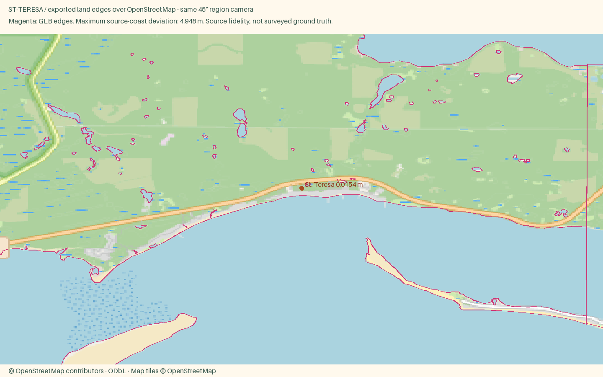

St. Teresa
Open atlas · Accuracy CSV · Sourced medians
Region
St. Teresa
Open districtA quiet line of beach houses on US 98 east of Carrabelle, beside the FSU Coastal and Marine Lab. There are no stores here, and that is the point.
Source alignment

Manual fixes
- Town-specific package using the shared locked pipeline; facade colors are editorial interpretations, not a surveyed color inventory.
- Existing Census land context continues beyond the OSM data rectangle, avoiding artificial water edges at the package boundary.
- St. Teresa residential footprints supplemented from Microsoft Global ML Building Footprints (CDLA Permissive 2.0); negative local IDs are not OSM IDs.
St. Teresa buildings include imagery-derived Microsoft Global ML Building Footprints (CDLA Permissive 2.0). Negative local IDs are not OSM IDs. Footprint provenance. The OSM overlay validates coast and district anchors, not the supplemental roofs.